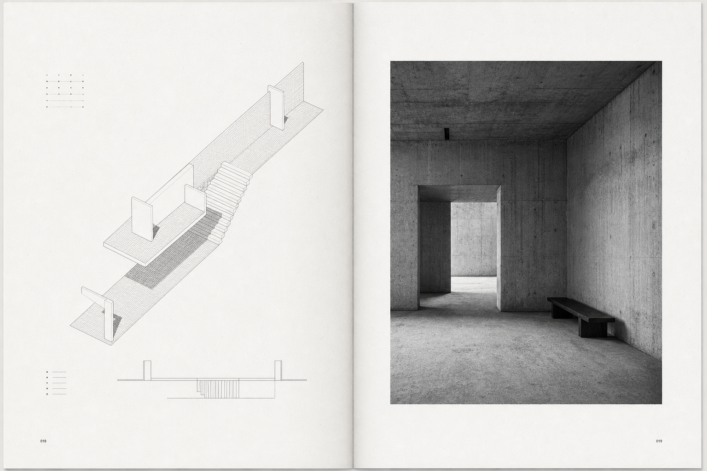

Issue 01 / Portfolio

Issue 01 / Portfolio

Grace works across art, architecture, interiors, installation, and image, using restraint, material detail, and spatial feeling to build a coherent creative practice.
Minimal spatial narratives, material studies, gallery-like interiors, image-led documentation.
KJArch / creative portfolio in development / open to studio and collaborative work.
This page is a short resume placeholder. Swap in education, selected exhibitions, studios, publications, and contact details when the final content is ready.
Threshold House is a quiet architectural study organised around compression, release, and a single framed opening to landscape.
Soft Concrete Room explores how heavy materials can feel hushed, intimate, and bodily when light is narrowed and surfaces are left nearly bare.
An image project placeholder shaped like a working archive: fragments of interiors, hands, samples, and landscapes arranged as memory rather than chronology.
Instagram / LinkedIn / KJArch address placeholder
Use this page for acknowledgements, full CV download, press links, or archive access.